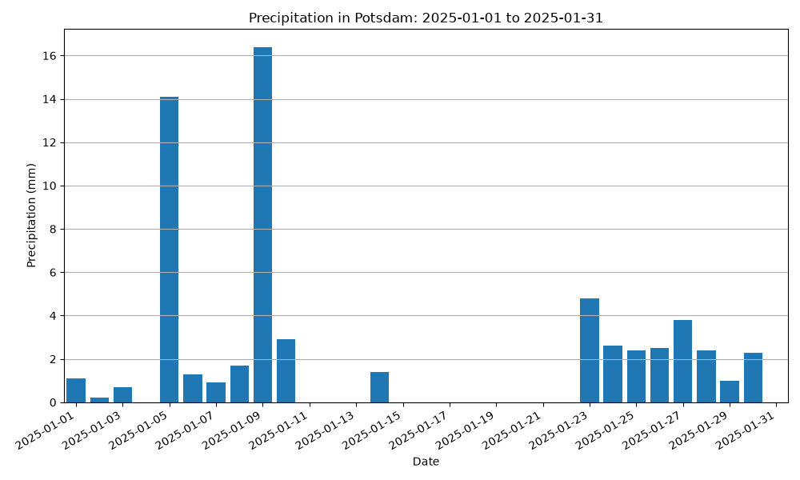

Data Analysis & Visualization
Weather Data Explorer Light
A local Python application for cleaning, filtering, analyzing, visualizing, and exporting historical weather data from the German Weather Service (DWD).
Back to ProjectsProblem
Historical weather datasets can contain formatting inconsistencies, missing-value markers, invalid dates, duplicate records, and more columns than are required for a specific analysis.
Before the data can be analyzed or visualized, it therefore needs to be prepared in a controlled and reproducible way.
Solution
The application processes a local historical weather dataset from the DWD station in Potsdam. It selects the required columns, cleans and converts the data, handles duplicates, sorts the records chronologically, and filters them to a user-defined date range.
The resulting dataset is used consistently for descriptive temperature statistics, two static visualizations, and a cleaned CSV export.
Key Features
- Reading and validating a local DWD weather dataset
- Cleaning and type conversion of relevant columns
- Controlled handling of missing values and duplicate records
- Inclusive filtering by start and end date
- Calculation of minimum, maximum, and arithmetic mean for daily mean temperature
- Temperature visualization using daily mean, maximum, and minimum temperature
- Precipitation visualization using daily precipitation values
- Export of the cleaned and filtered dataset as CSV
Technologies
- Python 3.14+
- pandas
- Matplotlib
- argparse
- pytest
- Ruff
- Git & GitHub
Applied Skills
- DataFrame-based data processing
- Data cleaning and type conversion
- Handling missing and contradictory data
- Date-range filtering
- Descriptive statistics
- Data visualization with Matplotlib
- CSV export
- Automated testing of processing steps
Technical Structure
The application uses a functional processing pipeline divided into modules with clearly separated responsibilities:
-
main.pycoordinates the CLI workflow, processing pipeline, error handling, and final terminal output. -
data_io.pyreads the source dataset and exports the cleaned data. -
cleaning.pyprepares columns, validates the station, cleans values, handles duplicates, and sorts the data. -
analysis.pyvalidates analysis dates, filters the selected period, and calculates temperature statistics. -
visualization.pycreates the temperature and precipitation diagrams.
The central data structure is a pandas DataFrame. The documented source dataset contains 48,577 daily records and 19 raw columns, of which seven are used by the application.
The completed project contains 22 automated pytest tests. Ruff completed without findings, and the dependency check completed successfully in the final project state.
Installed command:
weather-data-explorer-light <file> <start-date> <end-date>
Example Output


Data Source
The project uses historical daily climate observations from the DWD Climate Data Center for station Potsdam. The raw DWD dataset is not stored in the repository and is provided separately under its own data license.
The source data remains unchanged. Cleaning, filtering, and exported results are created locally by the application.
Known Limitations
- The application is designed for the local Potsdam station dataset.
- Source data must be downloaded and provided locally.
- Missing measurement values are not interpolated.
- Statistical analysis is intentionally limited to basic daily mean temperature statistics.
- Visualizations are static PNG files rather than interactive charts.
Repository
The complete source code, tests, documentation, and example visualizations are available in the public GitHub repository.
View Repository on GitHub